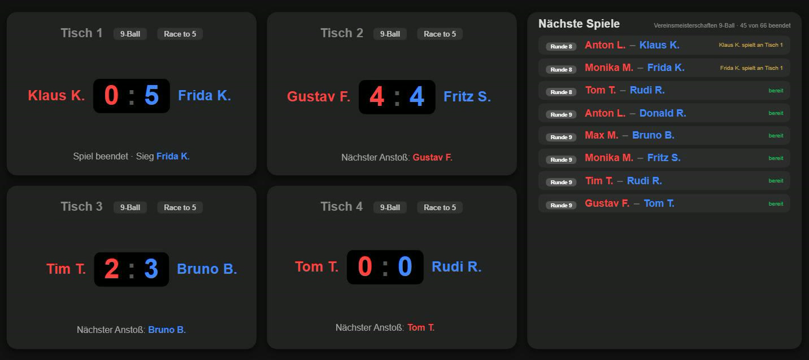

Turniere
Jeder gegen jeden, zwei Gruppen, Gruppen mit KO-Runde oder Doppel-KO. Mit Auslosung, Zeitprognose und Vorgabe nach Spielstärke.
CueDesk führt den ganzen Spielbetrieb eures Vereins: vom Auslosen über die Tablets an den Tischen bis zur Rangliste. Ergebnisse landen sofort dort, wo sie gebraucht werden.

Statt Zettel, Excel-Listen und WhatsApp-Nachrichten liegt alles in einer Datenbank. Nichts muss abgetippt oder zwischen Programmen hin- und hergeschoben werden.
Jeder gegen jeden, zwei Gruppen, Gruppen mit KO-Runde oder Doppel-KO. Mit Auslosung, Zeitprognose und Vorgabe nach Spielstärke.
Mannschaften und Kader je Saison, Aufstellung mit Regelprüfung, Hin- und Rückrunde und der fertige Spielbericht.
Tablets zählen 8-, 9-, 10-Ball und 14.1 endlos. Sie holen sich ihre Partie selbst und melden das Ergebnis direkt zurück.
Der Fernseher im Vereinsheim zeigt alle Tische. Mitglieder schauen von zu Hause zu, auf Wunsch auch über einen öffentlichen Link.
Die Spielstärke je Disziplin als Zahl, jede Nacht neu berechnet. Daraus entsteht auf Wunsch die Vorgabe im Turnier.
Serienwertung, Bestenlisten, Saison-Überblick und Archiv. Jedes Mitglied sieht seine eigene Statistik.
Der grüne Knopf zeigt immer den nächsten Schritt. So findet sich auch zurecht, wer nur ab und zu die Turnierleitung übernimmt.
Name, Disziplin, Modus und Race wählen. Die Vorgaben des Vereins sind schon eingestellt.
Aus der Spielerliste wählen, Gäste ergänzen, gesetzte Spieler markieren.
CueDesk erstellt Gruppen und Spielplan und verteilt die Partien auf die Tische.
Die Tablets zählen mit. Tabellen, Fernseher und Live-Ansicht sind sofort aktuell.
CueDesk speichert bewusst wenig: keine Anschrift, kein Geburtsdatum, keine Bankdaten. Die Datenbank liegt in der EU (Frankfurt), jeder Verein ist streng von den anderen getrennt.
Der Verein kann alle Daten jederzeit herunterladen und die Nutzung jederzeit beenden. Namen erscheinen auf öffentlichen Seiten nur mit Einwilligung.
Mehr zum DatenschutzCueDesk ist ein privat betriebenes Projekt aus dem Vereinsleben, entstanden für den eigenen Spielbetrieb. Die Nutzung kostet nichts, es gibt kein Abo und keine Werbung.
Ihr braucht nur Geräte mit einem aktuellen Browser: ein Notebook für die Turnierleitung, Tablets für die Tische und auf Wunsch einen Fernseher.
So kommt euer Verein zu CueDeskNicht jeder Verein braucht gleich alles. Diese beiden Werkzeuge laufen für sich allein.
Pool und 14.1 endlos im Browser auf jedem Tablet, auch ohne Internet. Open Source unter MIT-Lizenz: herunterladen und für euren Verein anpassen.
Zu den ScoreboardsTurnierpläne, Serienwertung, Rating und Auswertung auf einem Rechner, ganz ohne Internet. Aktualisiert sich selbst.
Zu TurnierPilotSchreibt kurz, wer ihr seid und wie ihr spielt. Ihr bekommt eine Antwort und, wenn es passt, einen Zugang für euren Vereins-Administrator.